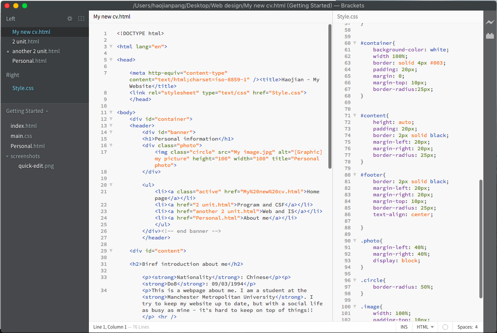

- Web Design
This unit has introduced me a range of topic in web design and development area. So far I have learned some basic skills of html and courses to help me develop my own website. In the next few months will be learn how to use Javascript.
Creat my own website
This image below shows my code of creating my own website, some basic stuff is already learning from foundation year. so is very easy to using the knowledge from the lecture and have a good control of the html coding. Quite interesting to creating a website for myself, I can use this into my CV to show the employer I have the skill of web design.
- Information System
This unit proves to be an invaluable learning experience, allowing me to experience the reality of working with others of varying abilities and experience, also learning by engaging fully with all aspects of the project work. In addition it also gives me an opportunity to work on an information systems project without some of the pressures that exist in industry, such as changing requirements, and cost constraints.
Use Case
Use case are used in systems decelopment to help identify and document the functionality of the system under consideration. Use Case Diagrams document the set of Use Cases that have been established for a system, and their links to the users of the system, represented by actors(Image below).